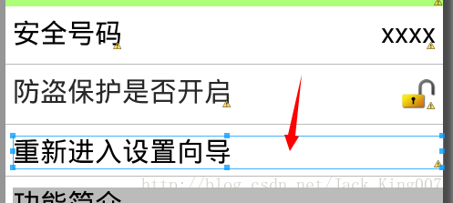

快速开发之02——textview能有点击事件发生
有时候点击不止只有Button组件有，为了美观 textview也能有一个美观的效果
而textview的点击事件的出现，只是为了一个能显示文字又能点击而有美观的事情发生，当然你也可以用 能显示文字的button来搞定
先看效果图

代码
<TextView
android:background="@drawable/shape_selector"
android:clickable="true"
android:onClick="reEnterSetup"
android:layout_width="fill_parent"
android:layout_height="wrap_content"
android:layout_marginLeft="5dip"
android:layout_marginTop="8dip"
android:text="重新进入设置向导"
android:textColor="#000000"
android:textSize="20sp" />首先
第一步设置 能否点击
android:clickable="true"
第二步增加背景属性
android:background="@drawable/shape_selector"
其实这里设计到了一个shape图形，不及先看
shape_selector的xml代码
<?xml version="1.0" encoding="utf-8"?>
<selector xmlns:android="http://schemas.android.com/apk/res/android">
<item android:state_pressed="true"
android:drawable="@drawable/gradient_box_pressed" /> <!-- pressed -->
<item android:state_focused="true"
android:drawable="@drawable/gradient_box_pressed" /> <!-- focused -->
<item android:drawable="@drawable/gradient_box" /> <!-- default -->
</selector>以上格式是shape图形要求的,这里不懂就得去看谷歌官方的说明了先看
1.gradient_box_pressed
<?xml version="1.0" encoding="utf-8"?>
<shape xmlns:android="http://schemas.android.com/apk/res/android"
android:shape="rectangle" >
<corners android:radius="5dip" />
<!--
渐变
<gradient android:startColor="#ff0000" android:endColor="#00ffff"/>
-->
<!-- 固定色 -->
<solid android:color="#44000000" />
<!-- <stroke
android:dashWidth="3dip"
android:width="2dip"
android:color="#000000"
android:dashGap="15dip" /> -->
</shape>rectangle就是矩形 这是我们要求的形状,2.gradient_box_pressed
<?xml version="1.0" encoding="utf-8"?>
<shape xmlns:android="http://schemas.android.com/apk/res/android"
android:shape="rectangle" >
<corners android:radius="5dip" />
<!--
渐变
<gradient android:startColor="#ff0000" android:endColor="#00ffff"/>
-->
<!-- 固定色 -->
<solid android:color="#44000000" />
<!-- <stroke
android:dashWidth="3dip"
android:width="2dip"
android:color="#000000"
android:dashGap="15dip" /> -->
</shape>这是当你鼠标按着这里的变化
3.gradient_box
<?xml version="1.0" encoding="utf-8"?>
<shape xmlns:android="http://schemas.android.com/apk/res/android"
android:shape="rectangle" >
<corners android:radius="5dip" />
<!--
渐变
<gradient android:startColor="#ff0000" android:endColor="#00ffff"/>
-->
<!-- 固定色 -->
<solid android:color="#ffffff" />
<!-- <stroke
android:dashWidth="3dip"
android:width="2dip"
android:color="#000000"
android:dashGap="15dip" /> -->
</shape>好啦结束了，只要照搬基本就可以使用了